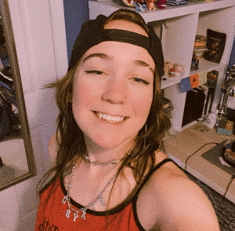

|
|
|||||||||
| Home Page || Printed Bookmark || Digital Photography || Speaker Infographic | |||||||||
|  |
Graphic Communication Major at Millersville University My name is Ashley Whicher, and I'm a junior at Millersville University. I'm a Graphic Communications major and also part of the ROTC program. My hobbies are playing video games and tennis with my friends. I was inspired to join the Millersville Graphics Department because of my love for art and design. During my Intro to Communications class, I had my design skills put to the test when I was assigned multiple design projects with different objectives. | ||||||||
| Home || Printed Bookmark || Digital Photography || Speaker Infographic | |||||||||
| ©2023 Ashley G. Whicher | |||||||||